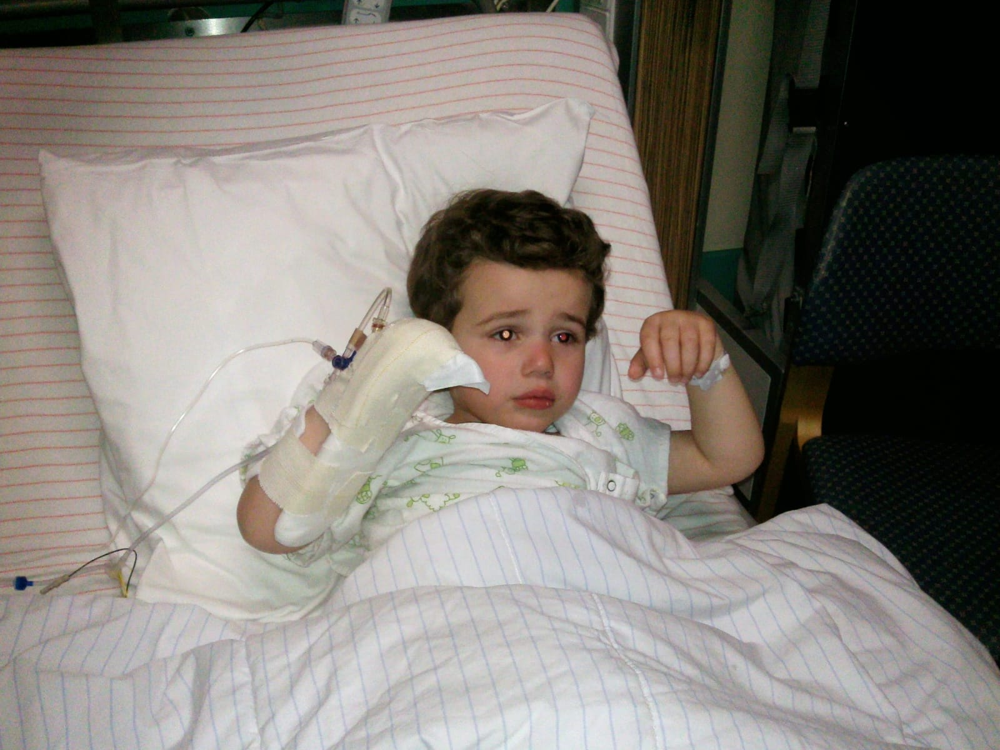
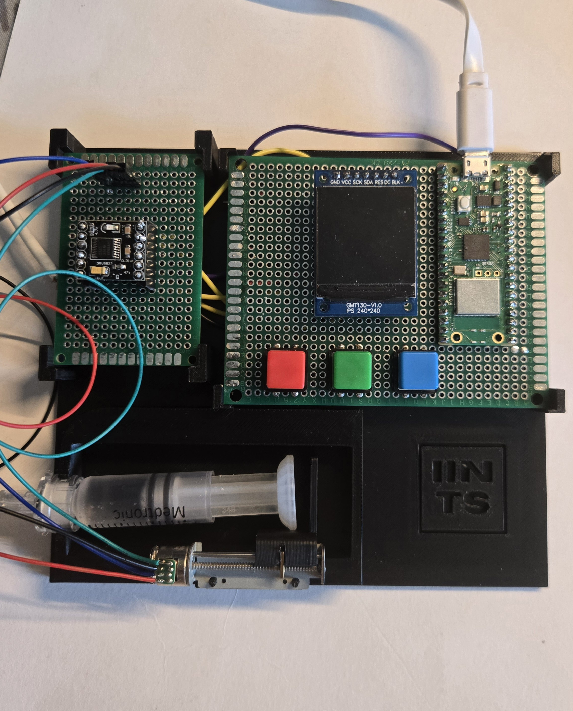
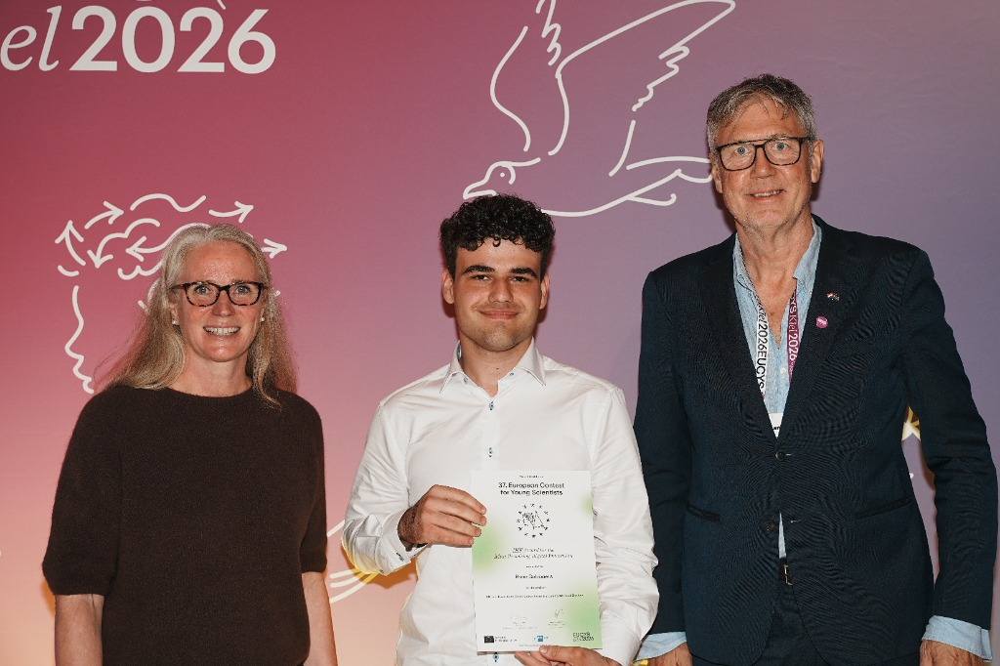
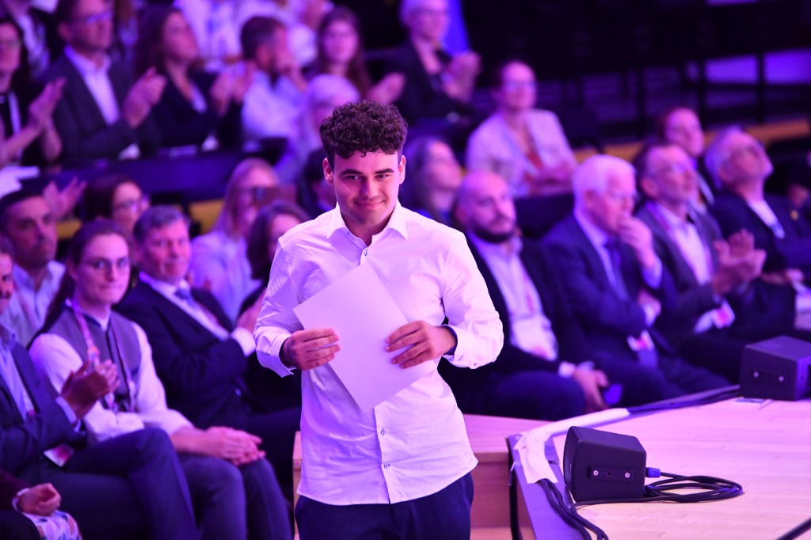
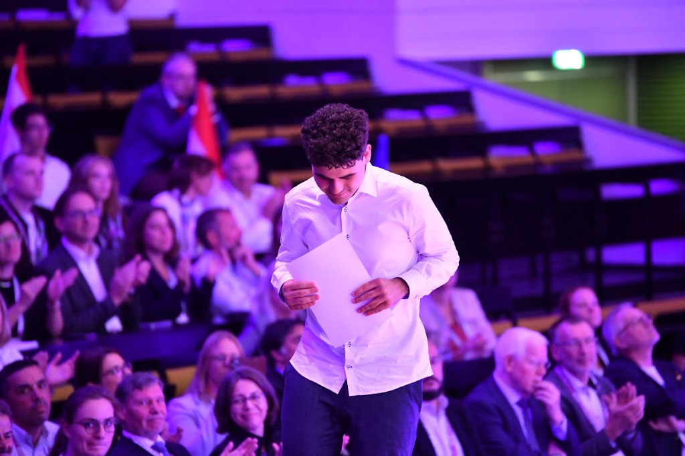

Rune Bobbaers
Student, Maker, Patient. Converting a lifelong condition into a technological mission.
The Question That Changed Everything
My name is Rune Bobbaers, and I've been living with Type 1 Diabetes since I was three. As long as I can remember, I've depended on insulin pumps and glucose sensors—devices that literally keep me alive. But as I got older, I realized something that changed everything: I had no idea how these machines worked.
That question "how does my pump know what to do?" became the start of a journey. At first, I was just curious. I started taking things apart, sketching, experimenting, and teaching myself electronics and code. Over time, that curiosity turned into IINTS, a project that explores how we can make medical technology open, transparent, and understandable.

Learning, Not Replacing
IINTS is not about replacing medical devices. It's about learning from them. The goal is to create an open-source educational platform where students, engineers, and even patients can understand the logic behind insulin delivery, glucose prediction, and closed-loop systems safely, transparently, and collaboratively.
Today, I use tools like the Jetson Nano to simulate blood glucose data, train AI models, and experiment with the principles behind automated insulin delivery. The idea is simple: by making technology visible, we make it better and safer.

Most Promising Digital Project
What started as a personal question at my desk grew into representing Belgium at the European Union Contest for Young Scientists (EUCYS).
During the 37th edition in Kiel, IINTS was awarded the prize for Most Promising Digital Project—an encouraging recognition that open, inspectable, and patient-driven medical technology research matters on a European stage.


